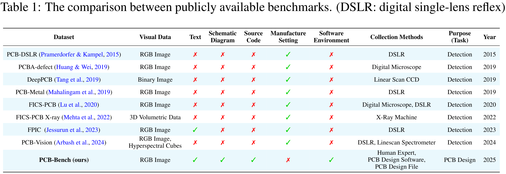
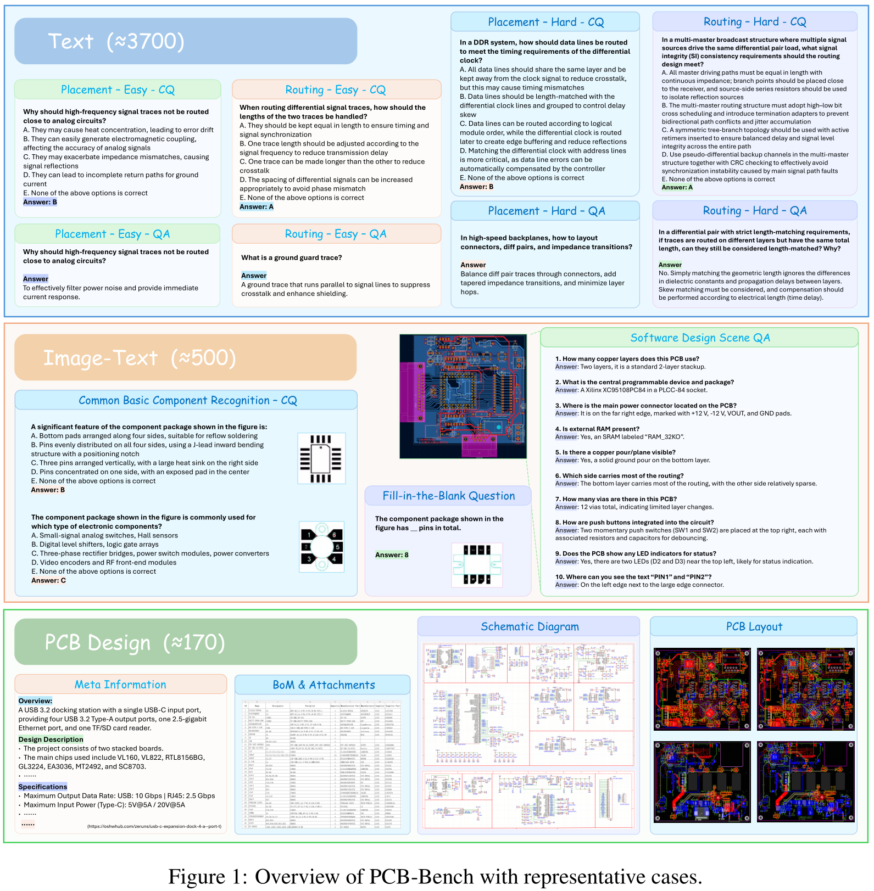
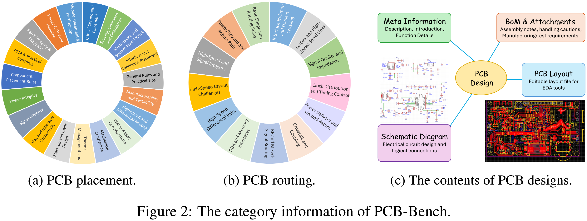
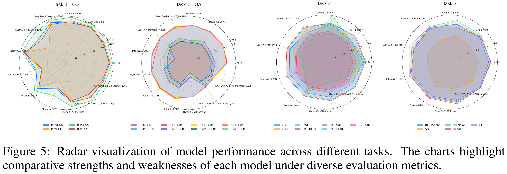
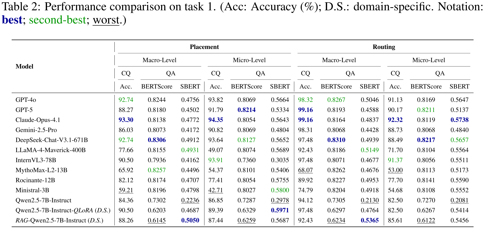
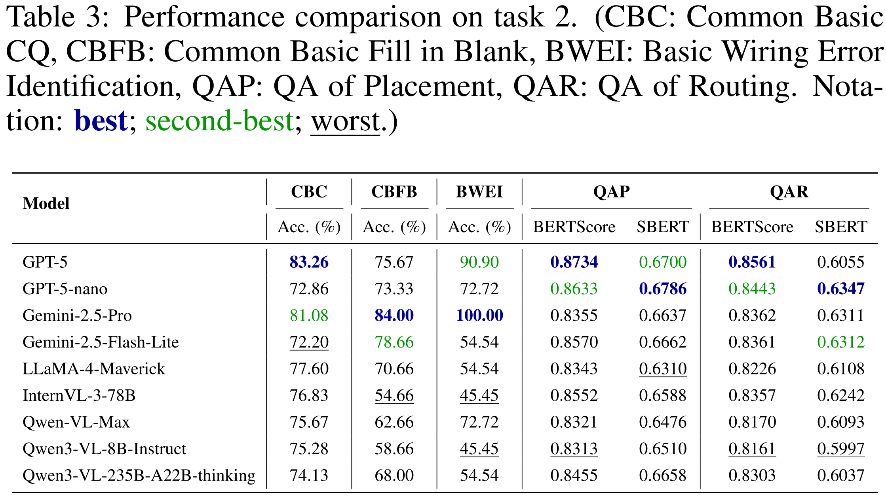
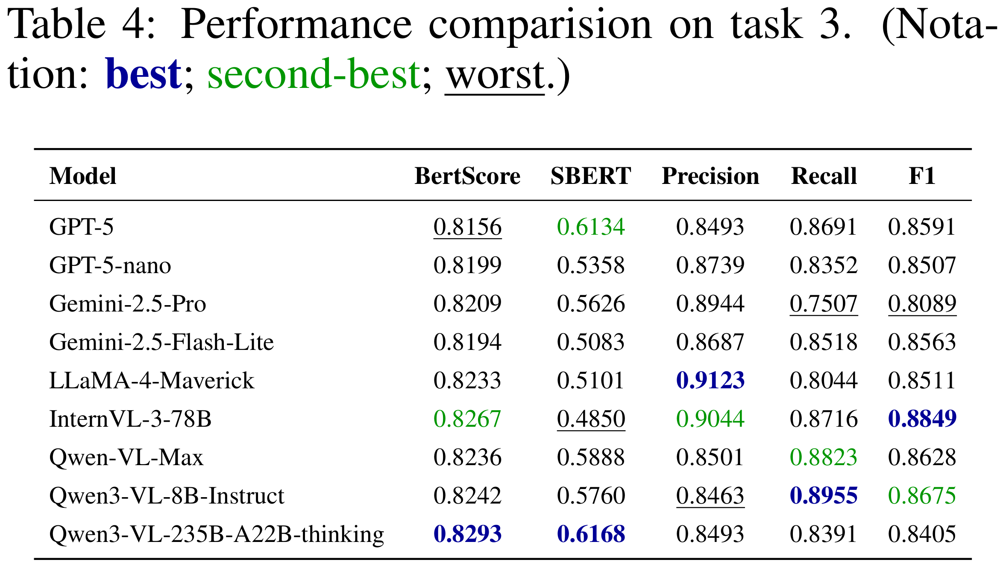
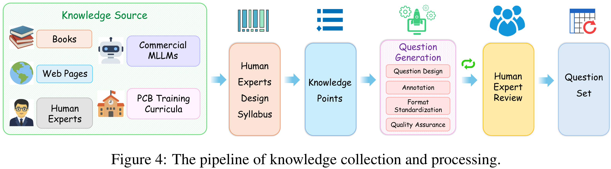
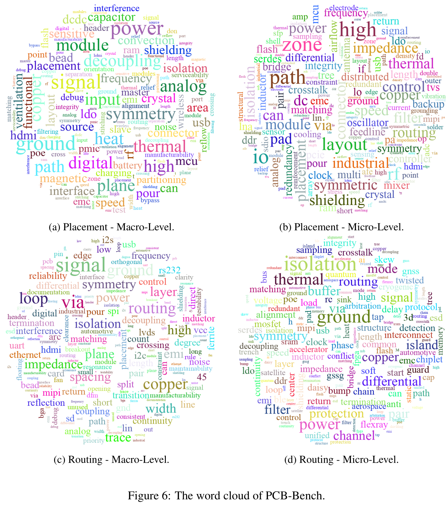

Published as a Conference Paper at ICLR 2026
PCB-Bench: Benchmarking LLMs for Printed Circuit Board Placement and Routing
*Equal contribution †Corresponding author
The Hong Kong University of Science and Technology (Guangzhou)
PCB-Bench is the first comprehensive benchmark designed to systematically evaluate (multimodal) large language models (LLMs/MLLMs) in the context of PCB placement and routing. It integrates text, images, and real PCB design artifacts into a unified evaluation framework for realistic PCB engineering reasoning assessment.
PCB-Bench highlights the gap between existing publicly available PCB-related benchmarks and realistic PCB design evaluation, and provides a unified benchmark suite for PCB placement and routing reasoning.

PCB-Bench spans three complementary task settings and corresponding datasets: (1) text-based reasoning (Text-to-Text QA & CQ), (2) multimodal image-text reasoning (Image-and-Text QA/CQ), and (3) real-world PCB design comprehension (PCB Design Understanding).


We benchmark a diverse set of state-of-the-art LLMs/MLLMs under a unified zero-shot protocol. The results reveal substantial performance variation across tasks, reflecting the remaining challenges in PCB placement and routing reasoning.




PCB designs are collected from publicly available and legally accessible sources (including OSHWHub operated by JLCPCB), with no proprietary or sensitive industrial data involved. Each real-world project is associated with traceable artifacts for transparency and reproducibility.


@inproceedings{li2026pcbbench,
title = {PCB-Bench: Benchmarking LLMs for Printed Circuit Board Placement and Routing},
author = {Jindong Li and Lianrong Chen and Bin Yang and Jiadong Zhu and Ying Wang and Yuzhe Ma and Menglin Yang},
booktitle = {International Conference on Learning Representations (ICLR)},
year = {2026}
}